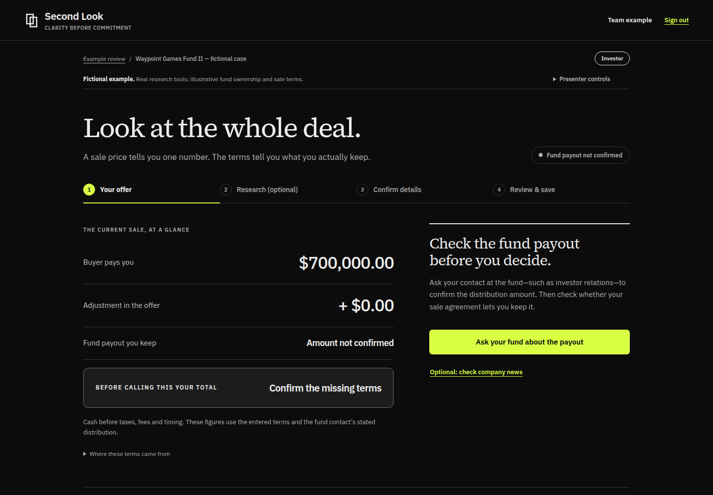
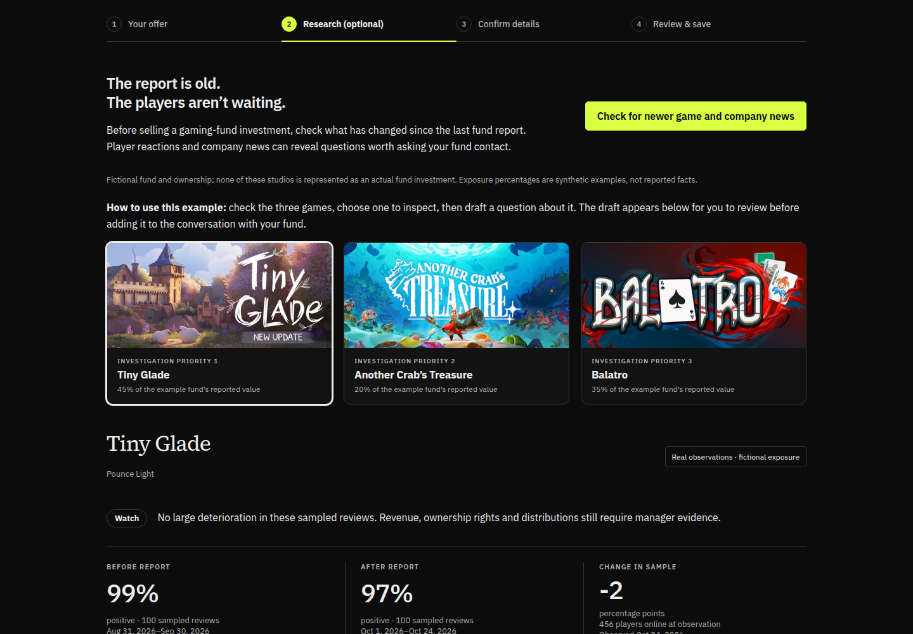
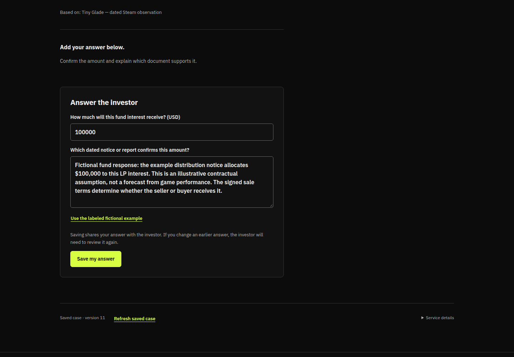
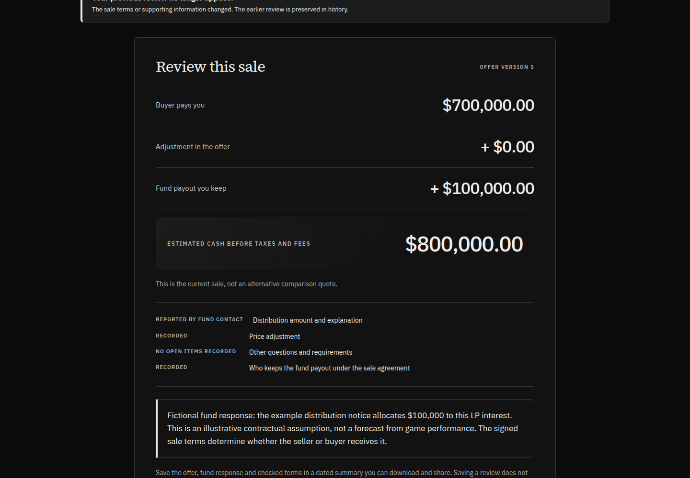
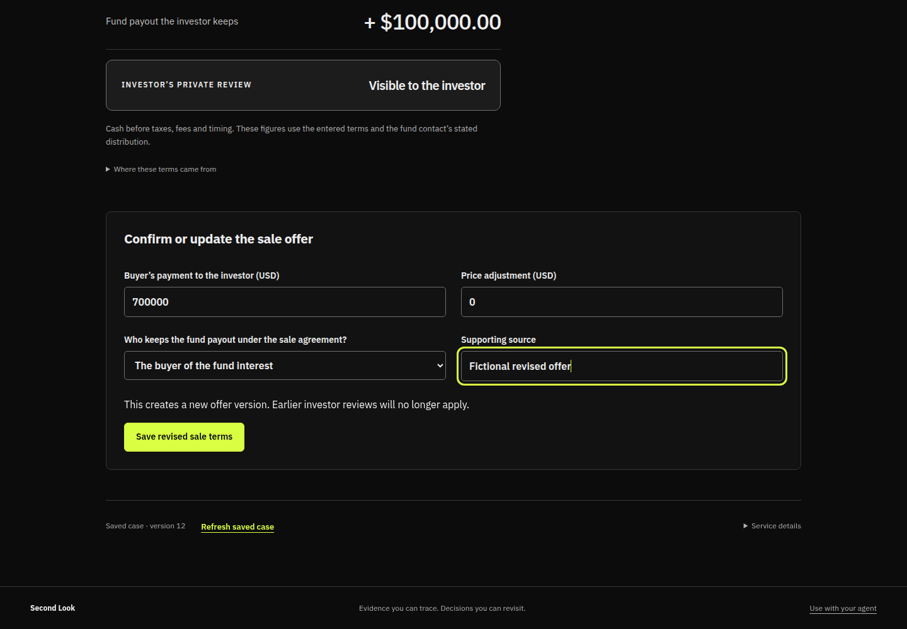
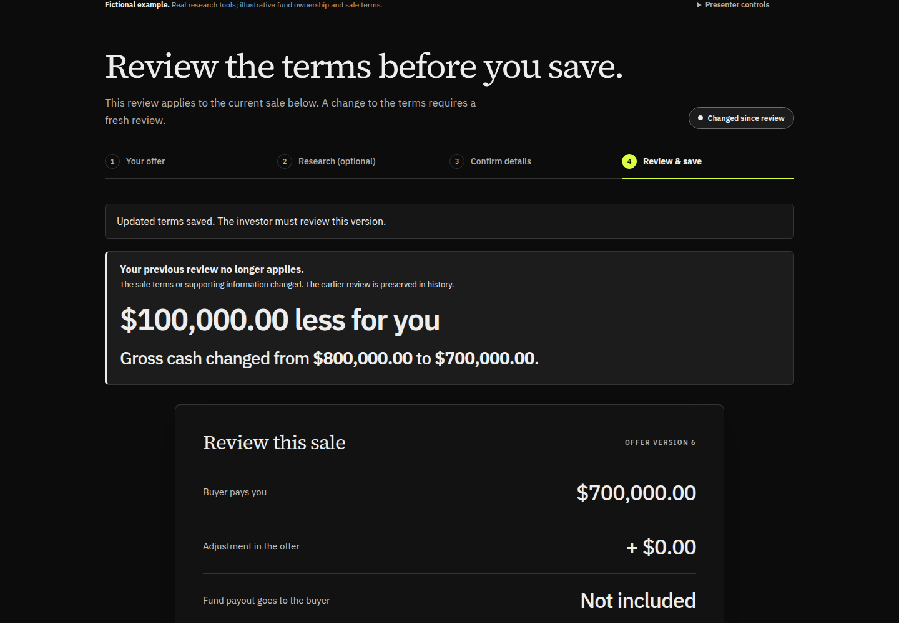

Before the timer starts, open https://secondlook.ac, refresh, click Try the example and enter the team code. Start on Your offer with a $700,000 purchase payment and an unconfirmed fund payout. Read only the Say paragraphs aloud. The screenshots are captured examples, not a live view of the app.
Read the script in GitHub · Download the six-page PDFCaptured October 24, 2026. Use your browser’s Print option to save as PDF. For a screenshot fallback, tell the audience these are captures from the working app.





